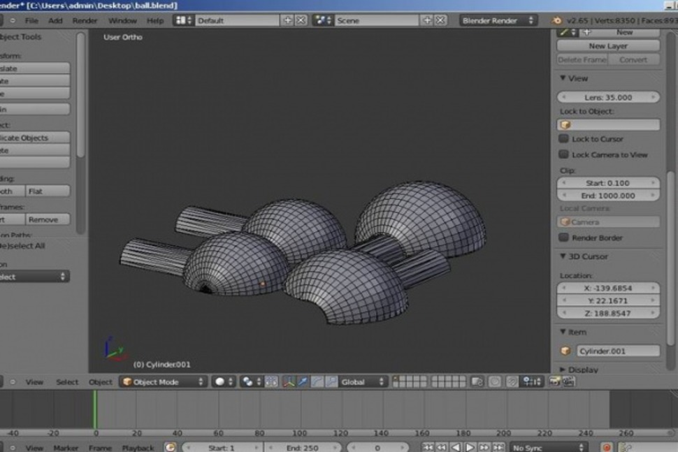
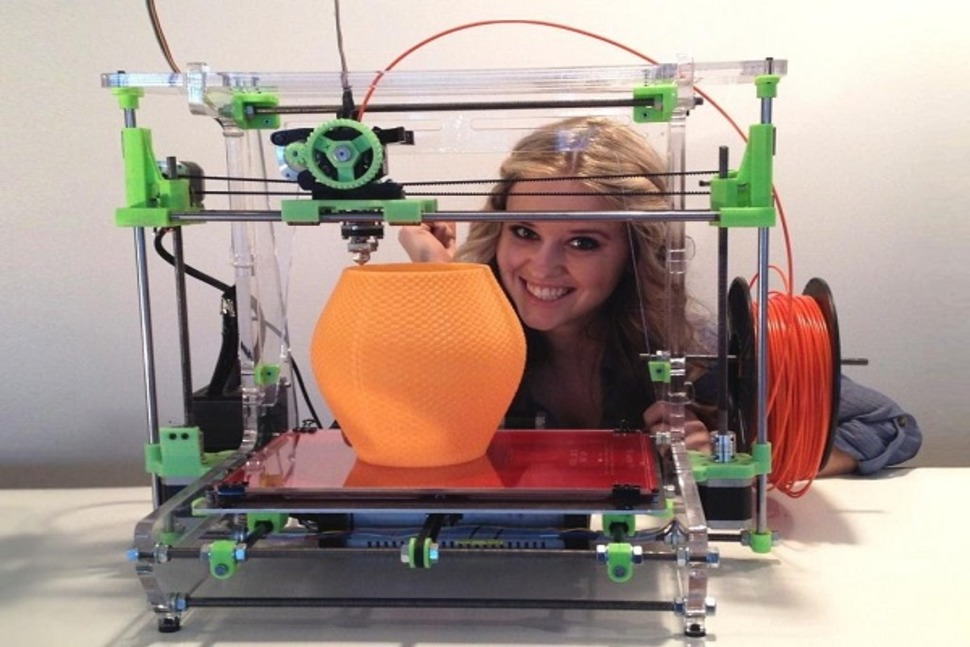

Запрогромовуння на друк

Для початку роботи (друку) на 3D-принтері, майбутній предмет необхідно намалювати, причому у всіх трьох вимірах.
ДЕТАЛЬНІШЕ
Коли справа доходить до 3D-друку, такі моделі піддаються «слайсинга», тобто розбиваються на окремі шари за допомогою спеціальних програм, так і званих - слайсери.
ДЕТАЛЬНІШЕ

Слайсер формує спеціальну програму для 3D-принтера. У цій програмі принтера розповідається, як потрібно друкувати модель.
ДЕТАЛЬНІШЕ